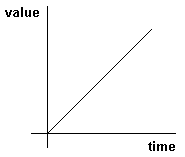
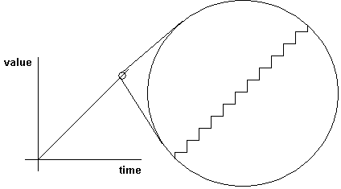
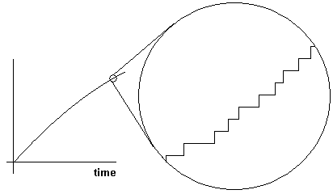
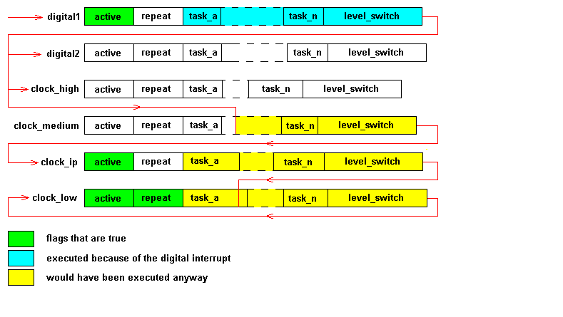
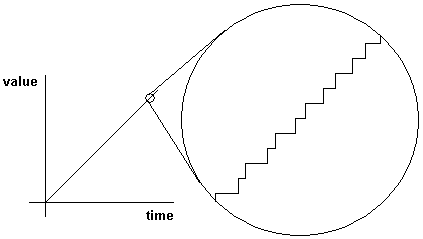

If a computer is controlling a machine, TCP/IP should have a low priority. Stopping the machine at limit switches, generating a nice function output; they are all things of greater importance. What does it matter if a couple of datagrams get dropped, the network has probable dropped some anyway. The whole TCP/IP protocol suite is designed around the assumption that datagram delivery is unreliable.
COLDFORTH supports preemptive multitasking and places TCP/IP communication priority a level above the lowest level. The lowest level is used for user input. Both levels are below the priority levels used to control the machinery.
TCP/IP requires the timeout of routes, the timeout of ARP entries, timeout of defragmentation attempts, and the detection of TCP inaction. All these functions are placed in tasks that sit on the lowest priority level along with terminal input and buffer defragmentation. Getting the data through has a higher priority.
Having a preemptive multitasker allows you to give the plant priority and still enjoy the benefits TCP/IP brings to industrial control.
This article looks at why preemptive multitasking is important and how it is implemented in COLDFORTH.
If you're using your computer to stop a piece of machinery at a limit switch or to generate time based waveforms; time matters. If you don't stop at the limit switch you run into the end stops. If you make a mess of an analog function generating a speed reference the equipment will not accelerate smoothly placing extra stress on the equipment and occupants.
Let's take a closer look at waveform generation. In the real world you create an S curve when generating a speed reference, such a curve limits the jerk ( the derivative of acceleration). For our example we will look at the generation of a simple ramp.
The desired function is.
If you implement your software well and take a close look at the output you will see what is shown below.
If you schedule badly but take into account the elapsed time, things look good at a distance. The magnified image is an irregular staircase. If this was controlling a DC machine the big steps would represent large current demands, current demands that could lead to equipment failure, or in extreme cases current demands the real world can't deliver.
And if you schedule badly, and don't take into account the elapsed time things don't look good even at a distance. As the diagram below shows.
The sort answer is no. You can do it with no multitasking. If an application programmer was trying to do the job with an OS that supported no multitasking they would simply call the ramp function regularly.
: anns_ramp_function whatever_is_required ; : my_function ( --) do_some_of_my_stuff anns_ramp_function do_some_more_of_my_stuff \ forget ann I need to get this job done \ anns_ramp_function and_so_on ;
If you do it this way all code has to contain calls to unrelated code. Not a very modular solution, and the reason why many FORTH systems support a single loop multitasker. The sample code them becomes.
#clock_low task: anns_ramp_function BEGIN whatever_is_required xpause AGAIN ;task : my_function ( --) do_some_of_my_stuff xpause do_some_more_of_my_stuff \ forget every one else I need to get this job done \ xpause and_so_on ;
In the FORTH environment switching from one task to the next in a task loop is a simple matter. You push the state of the FORTH environment onto a stack, save the stack pointer into a task specific location and start the next task. COLDFORTH is a subroutine threaded forth that supports local variables and objects. To switch tasks within a loop:
There are FORTHS that support single loop multitaskers, but don't maintain the local variable and object pointer in registers. These FORTH will switch tasks even faster.
The single loop multitasker brings one big advantage. You do not have to know anything about the other functions, you simply exit to the multitasker often, and give others a go.
There a two major problems:
A preemptive scheduler is run by an interrupt source. The interrupt can be anything; a clock, or if your computer is dealing with video images the horizontal sync. Whatever the event, the idea is simple. When the event occurs you suspend the low priority stuff ( which hopefully is where you are at) and start the high priority stuff. It then doesn't matter how the low priority stuff behaves.
Preemptive multitasking can be taken to extremes, where every process is scheduled independently of every other. This is how Unix works. But even in these environments single loop multitasking is implemented within the process. They are called threads.
For preemptive multitasking to work you need to be able to suspend the low priority stuff and restart it from where you left off. When you store the low priority task you have to store the entire machine state. This involves a lot more work than switching tasks within a loop. COLDFORTH running on the COLDFIRE has to save 16 general purpose registers and 3 MAC registers.
On a processor running Unix properly, there is a memory protection system that limits the memory a process can access. Unix task switch code has to deal with the memory protection system; saving what is, and setting things up for what will be.
There are many different ways to schedule tasks in a preemptive environment. COLDFORTH has a limited number of tasks loops and the loops are scheduled in a well defined manner.
When you initiate a reschedule in an interrupt routine you set the active flag true for the level you want scheduled, and you make sure the priority level to be scheduled next ( _xlevel_next) is at least as high as the priority of the level you want scheduled.
When the OS switches from supervisor state to user state it looks at the priority of the level currently being run ( _xlevel), if it is lower than _xlevel_next the OS suspends the current level and activates the higher level.
The diagram below shows what happens when a digital interrupt routine calls for a reschedule.
The COLDFIRE task supports task activation modes that reflect real time control requirements. To highlight their significance they all start with x.
| multitasking words | ||
|---|---|---|
| WORD | STACK | DESCRIPTION |
| xcycle | ( n--) | Add n to the task activation time and wait until then |
| xnext | ( --) | Exit to the multitasker without altering the tasks status |
| xoff | ( --) | Set the tasks status to sleep and exit to the multitasker |
| xpause | ( --) | Set the tasks status to wake and exit to the multitasker |
| xsleep | ( --) | Set the tasks status to sleep |
| xtest | ( --) | Set the tasks status to test |
| xtimeout? | ( --flag) | Did an external event wake us or did we time out |
| xwait | ( n--) | Wait n ticks ( where a tick is 10 msec) and start the task again |
| xwake | ( --) | Set the tasks status to wake |
The difference between xcycle and xwait may need some explanation. xwait takes the current time and adds n and uses that as the next task activation time. If the task slips because of overload, the time is lost forever. xcycle takes the time when the task should of been activated and adds n to it. If the task slips the lost time is made up next time around. It you program anns_ramp_function as follows
ram_variable %ramp_value #clock_medium task: ramp BEGIN #ramp_rate %ram_value +! %ram_value @ to_analog_output 10 xcycle AGAIN ;task
The following output can then occur if the program is run on a heavily loaded system.
There is a potential problem. If the system is continually overloaded there will never be an opportunity to catch up.
It is common in FORTH systems for a task to start with an instruction that controls behavior, with the instruction being altered as the tasks status changes. For example, if the task is suspended the instruction could be one that jumped to the instruction at the start of the next task. If the task is to be awakened the instruction could be a call to a routine that starts the task.
Unfortunately for this scheme to work you must be able to write self modify code. Many processors now support separate instruction and data caches, such processes place one major restriction on the program. You cannot modify the instruction stream without flushing the cache. The 5407 will be such a processor.
COLDFORH tasks start with an instruction ( trap22 for the COLDFIRE ) but it is fixed. The state of the task is determined by a numeric value stored after the trap instruction. The value in fact, could be used as an offset into a jump table.
The following diagram shows what a task loop would look like if it contained two tasks, one that could be activated through dual port memory, and one that is internal to the system.

The things to note are:
Imagine if you had I/O cards that allowed you to write data to a buffer on the card, and then write an activation code to a memory location, and that code wakes up a task that was designed to deal with your problem. If you could do that you would no longer have to write polling or interrupt routines in the I/O card.
Supporting task activation through dual port memory gives you that.
These two words hold the multitasker together. If you understand how these work, you understand the system. Unfortunately they are, and have to be code words.
When discussing the suspension of low level task we talked about interrupts setting active flags and raising the priority level, then when switching from supervisor to use mode, running the higher level.
When returning from an exception you have to return with _system_rte. This code looks to see if you are switching back to user, and if you are, looks to see if the current loop needs to be suspended and a high loop started.
When an exception is executed COLDFORTH switches to a supervisor stack. When task loops are suspended all exceptions have been serviced. We are about to switch back to user state. We could save the machine state on the supervisor stack and allow it to sit there until we next want to schedule that level.
That is what we do. We leave the user stack and the supervisor stack with the exception frame that started the process, and we stack onto the supervisor stack the machine state. We then set up an exception frame that will take us to the level that we want to start and we return from the exception.
trap27, the code that is responsible for level switching, removes the exception frame that was created when it was called, looks at the supervisor stack to see if there is a relevant machine state stored. If there is, trap27 restores the machine state and returns from the exception using the exception frame that was created in times gone by.
If there is no relevant machine state stored on the supervisor for the level about to be started, trap27 sets up a frame to start the first action in the next level.
The code for _system_rte runs something like this:
: system_rte ( excpt_frame -- excpt_frame machine_state _xlevel@| ) are_we_returning_to_user \ stuff flag <-- _xlevel_next @ _xlevel @ > \ stuff flag flag <-- AND IF save_the_machine_state _xlevel @ \ excpt_frame machine_state _xlevel@ <-- _xlevel_next @ setup_an_excpt_frame \ excpt_frame machine_state _xlevel@ excpt_frame2 <-- THEN return_from_exception ;
Things are a little complex as you have to take care to preserve all registers up to the time you save the machine state, or if you don't save the machine state, you have to preserve the machine state until you return_from_exception. For this reason _system_rte is written in machine code.
The code for trap27 runs something like this:
: trap27 ( ?? old_xlevel@ excpt_frame -- ?? old_xlevel@ excpt_frame) remove_exception_frame \ ?? old_xlevel@ <-- DUP level_we_want_to_switch_to = IF \ exception_frame machine_state old_xlevel@ <-- setup_machine_state \ exception_frame<-- ELSE setup_exception_frame_to_start_new_level THEN return_from_exception ;
Once again things are a little complex, we may get ourselves into the situation where we are trying to restore a machine state. For this reason trap27 is written in code.

|
There can be multiple machine states saved on the system stack. But the high priority levels will be saved on top of the low priority levels. This diagram shows a possible system stack state when servicing a high priority interrupt. |
After _system_rte and trap27, trap22 is positively boring. You don't even have to run it with interrupts disabled. We do however have to destroy the exception frame so it to is written in code.
The code for trap22 runs something like this:
: trap22 ( exception_frame -- ) set_us_beack_to_user_mode remove_exception_frame_leave_status_address \ status_address<-- DUP @ sleep = IF DROP jump_to_next_in_loop THEN DUP wake = IF DROP activate_task THEN DUP test = IF task_restart_time @ xclock- @ + 0< IF DROP activate_task THEN THEN next_in_loop ;
How we test for activation time is the only noteworthy item. The interrupt clock increments a counter called xclock+ and decrements a counter called xclock-. Then you want to set an activation time you take the xclock+ value add the delay and store as the task activation time. To see if the time has expired you add the stored value to the contents of xclock-. When the required time has passed the summation will be negative.
To write code in a multitasking environment you lose total control. You have to follow some rules. In a single loop multitasker you can assume you have resources that are shared with other processors up until you exit to the multitasker. This assumption is the foundation of systems that implement FORTH BLOCKs as a consistent shared resource. That is all tasks will see the same data, and tasks can alter data in a BUFFER/BLOCK, but must execute UPDATE before exiting to the multitasker.
With preemptive multitasking such assumptions are not valid. The only data tasks can alter is data they own. If you use blocks, only one task can have access to the block at a time. BUFFER or BLOCK must make a copy of the data available to the task, UPDATE must write the data back to the file system. But what happens if two task ask for the same buffer. There are now two copies and two potential updates. The only solution is to lock the block until the UPDATE occurs Not the correct action if the task only wanted to read the block. The solution in such an environment is to move to a OPEN-READ/WRITE-CLOSE paradigm. You can then indicate the desired operation ( read or write ) when opening the file.
If you're going to add the overhead of opening/closing the resource you may as well go for something larger than a block. The FORTH file words suddenly become very important. The block words next to useless.
The strict priority used to schedule the COLDFORTH task loops however allows one useful generalization. If you're in a high priority task altering data that is used by a low priority task, you will get to finish your job before the low priority task gets to play.
This generalization is used a lot in the COLDFORTH TCP/IP implementation.